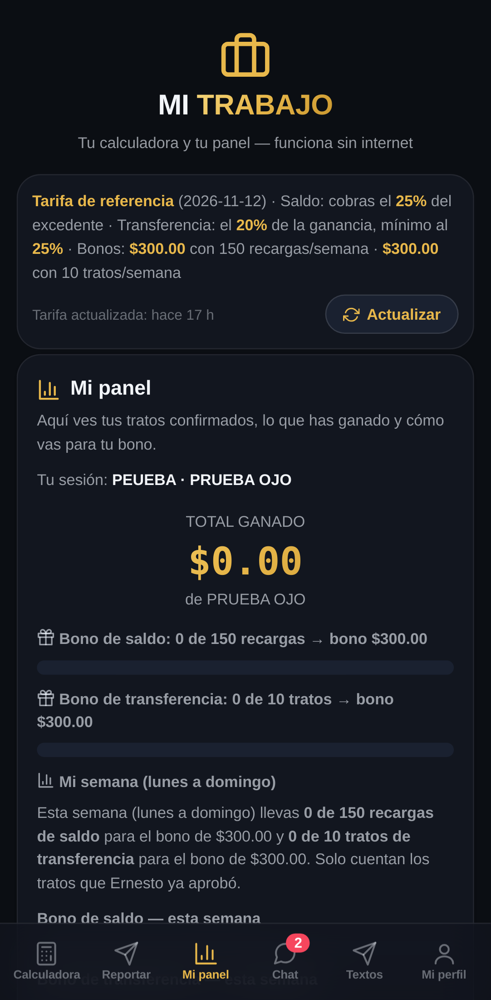
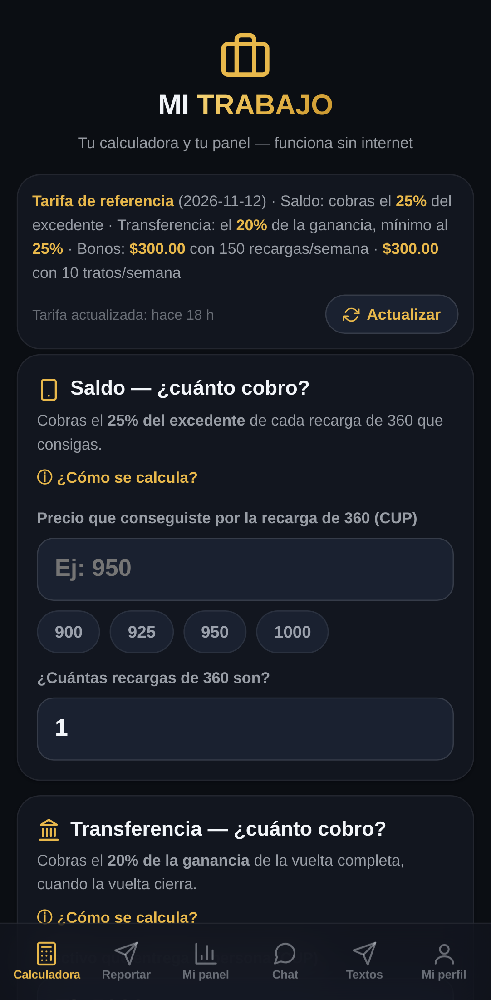
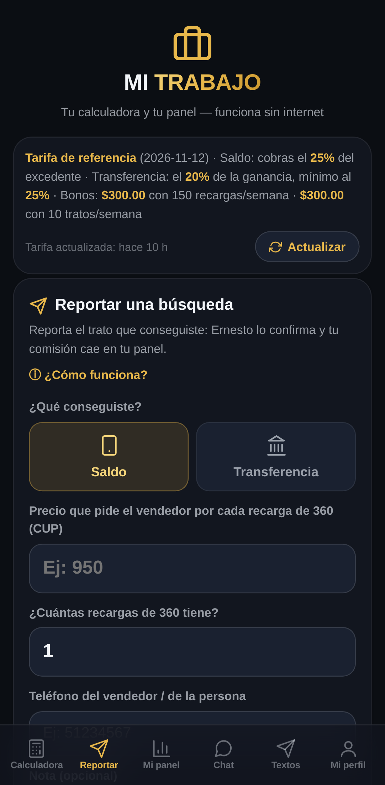
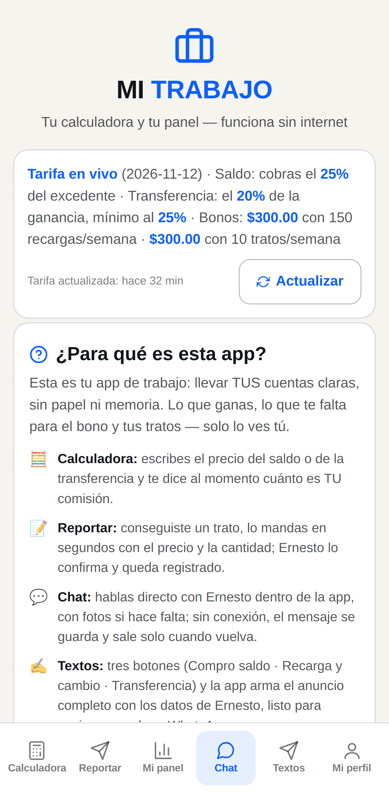
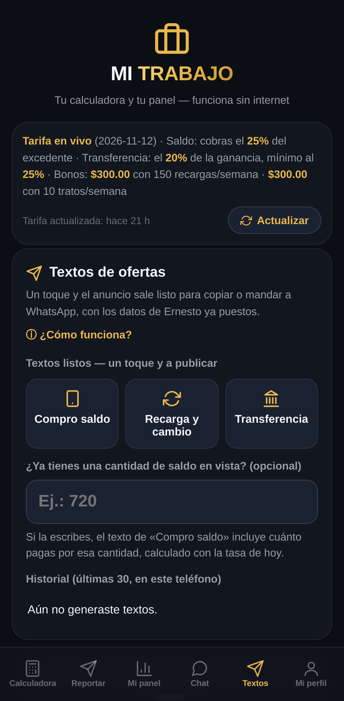
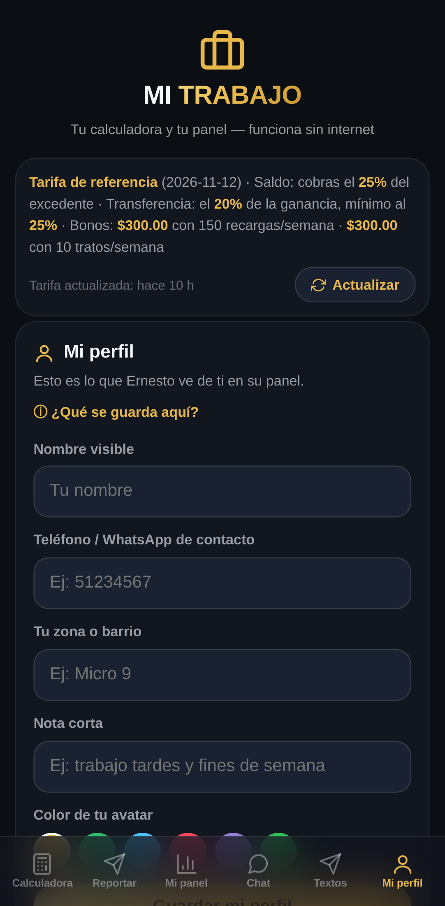
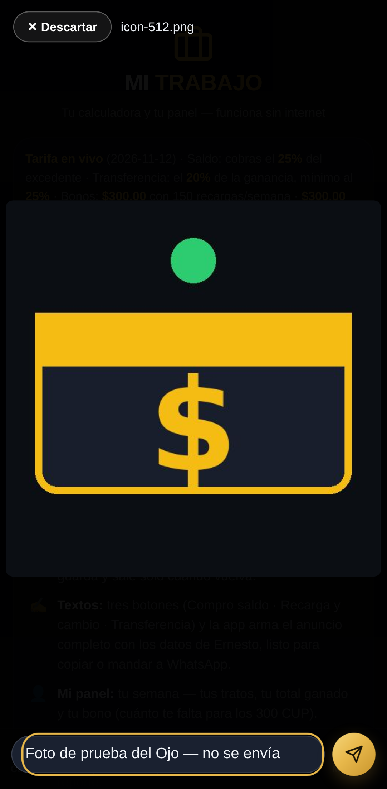
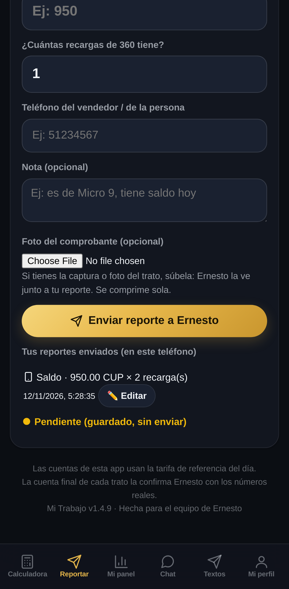
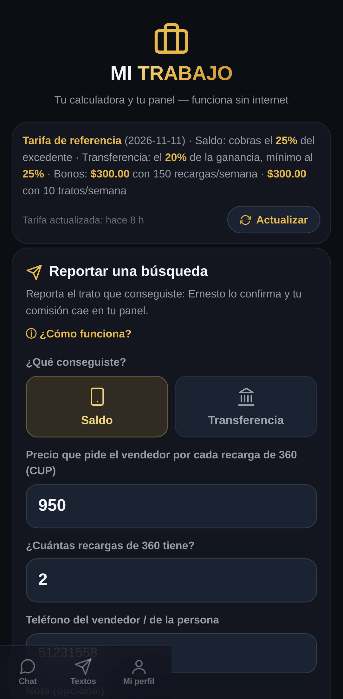

Ojo Web · Mi Trabajo por dentro
Recorrido interior de la versión web de Mi Trabajo con la cuenta de prueba PEUEBA, a tamaño de teléfono. #3FB96B (hora de Cuba).
VERDE
Entrada con PEUEBA: sí, por su enlace · Pantallas fotografiadas: Calculadora, Reportar, Mi panel, Chat, Textos, Mi perfil · Editor de foto del chat abierto y fotografiado (sin enviar): sí · Botón «Editar» de reportes alcanzado: sí, y el formulario entró en modo corrección.










Alcance honesto: la cuenta es la de prueba del Ojo (PEUEBA), sin datos de Briku ni Abraham. El editor de foto se fotografió SIN enviar (se descartó). El reporte con «Editar» se sembró solo en el navegador del robot, con la red de Supabase bloqueada: nunca salió de ahí. Esto es un navegador de mentira en un servidor: caza errores de carga y de diseño; la prueba final sigue siendo el teléfono de verdad.